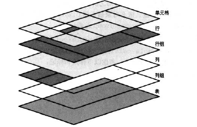

表格式化
表显示值
- display:table 这个值定义了一个块级表。对应HTML元素的table
- display:inline-table 这个值指定一个元素定义一个行内级表。与之最接近的非表值是inline-block,最接近的HTML元素是table
- display:table-row 指定一个元素是一个单元格的行，对应HTML中的tr
- display:table-row-group 指定一个元素是一个或多个行的组，对应HTML中的tbody
- display:table-header-group 对应HTML中的thead
- display:table-footer-group 对应HTML中的tfoot
- display:table-column 对应HTML中的col
- display:table-row 对应HTML中的colgroup
- display:table-cell 指定一个元素表示表中的单个单元格，对应HTML中的th和td
- display:table-caption 定义一个表的总标题，对应HTML中的tr
Reds8
Cubs5
表标题
caption-side的值：top|bottom初始值top，它应用于display值为table-caption的元素，有继承性。
表单元格边框
border-collapse:collapse|separate,应用于display值为table或inline-table的元素，有继承性。
边框间隔
border-spacing：<length><length>,应用于display值为table或inline-table的元素，有继承性。它完全可以代替HTML属性cellspcing
| cell one | cell two |
| cell three | cell four |
border-spacing值会应用于表本身，而不是单个表单元格。如果为td元素声明border-spacing,则会被忽略。
处理空单元格
empty-cell:show|hide,如果设置为show，会画出空单元格的边框和背景。为hide，则不会画出该单元格的任何部分。，注意这个属性除非border-collapse为seperate，否则会忽略该属性。
匿名表对象
对于下列标记中
省略了标记，但是表格仍然能正常显示，这是因为CSS定义了一种机制，可以将"遗漏的"组件作为匿名对象插入
由此介绍一下对象插入规则
- 如果一个table-cell元素的父元素不是table-row元素，则会在该table-row元素及其父元素之间插入一个匿名table-row元素。
- 如果一个table-row元素的父元素不是table、inline-table或table-row-group元素，则会在该table-row元素及其父元素之间插入一个匿名table元素。
- 如果一个table-column元素的父元素不是table、inline-table或table-column-group元素，则会在该table-column元素及其父元素之间插入一个匿名table元素。
- 如果一个table-column/row/header/footer-group或table-caption元素的父元素不是table元素，则会在该元素及其父元素之间插入一个匿名table元素。
- 如果一个table、inline-table的子元素不是table-column/row/header/footer-group或table-caption元素，则会在该table元素及其子元素之间插入一个匿名table-row元素。
- 如果一个table-row/header/footer-group元素的子元素不是table-row元素，则在该元素及其子元素之间插入一个匿名的table-row对象
- 如果一个table-row元素的子元素不是table-cell元素，则在该元素及其子元素之间插入一个匿名的table-cell对象
表层
为了完成表的显示，CSS定义了6个不同的层，可以分别放表的不同方面。
